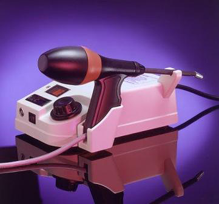

В большинстве случаев пациенты, страдающие геморроем, могут избежать хирургического лечения, используя малотравматические (нехирургические) методы. Нехирургические методы лечения доступны большинству пациентов как альтернатива стандартному хирургическому лечению.
Метод основан на воздействии инфракрасного пучка света на ткань внутреннего узла. Световой пучок энергии с высокой температурой приводит к разрушению сосудистой ножки внутреннего геморроидального узла и сокращению узла.
Метод рационален при начальных стадиях заболевания, реже - II стадии. Методика требует этапности лечения, так как после воздействия инфракрасного лазера остается раневой дефект от 4 до 6 мм, которых эпителизируется от 10 до 15 дней.
После инфракрасной коагуляции могут развиться следующие осложнения:
Эффективность метода на 1й стадии - 70%. Рецидив симптомов: до 30%.
В 1963 Barron предложил альтернативный способ лечения геморроя. Для ликвидации избытка выпадающей ткани внутреннего геморроидального узла предложено накладывать на узел резиновое кольцо. Резиновое кольцо пережимает ткань узла, над кольцом ткань узла разрушается и уходит в просвет кишки. После отторжения кольца на стенке кишки остается раневой дефект до 6-8 мм диаметром, который заживает в течение 14 дней. За одну процедуру возможно наложить не более двух колец на выпадающую ткань узла, поэтому метод лечения требует от 3 до 4 процедур, их точное количество зависит от стадии и размера внутреннего геморроидального узла. Латексное лигирование внутренних геморроидальных узлов обычно используется во II и III стадии заболевания.
К осложнениям лигирования относятся:
Кровотечение обычно возникает сразу после наложения кольца или через 7-10 дней, когда отторгается латексное кольцо, наложенное на узел. Кровотечение развивается в 2-5% случаев. В некоторых случаях кровотечение требует хирургической остановки.
Постоянная тупая боль обычно длится 1-2 дня после процедуры. В редких случаях лигирование приводит к тромбозу наружных и внутренних узлов, что сопровождается сильной болью.
К казуистике относятся несколько описаных в литературе случаев развития перианального сепсиса после лигирования.
Поэтому пациентам предлагается обращать особое внимание на признаки этого осложнения: сильную боль, лихорадку и затруднение мочеиспускания. Несмотря на чрезвычайную редкость осложнения, некоторые авторы рекомендуют воздерживаться от лигирования у пациентов с иммунодефицитом.
Эффективность лечения второй стадии 90%, третьей стадии 60-70%. Рецидив симптомов 20-40%.
Метод основан на введении с помощью инъекции склерозирующего раствора. В современной практике используются склерозирующие препараты-детергенты, вызывающие коагуляцию белков эндотелия в ткани внутреннего геморроидального узла с целью вызвать химическое воспаление в результате которого внутренний узел подвергается рубцеванию и сокращается в размерах. Наиболее часто используются препараты "Этоксисклерол", "Тромбовар", "Фибровейн". При правильном проведении склеротерапии пациент не должен испытывать болевые ощущения.
Cклерозирующий раствор вводится в узел (по Blond) или зону сосудистой ножки узла (по Blanchard).
Метод эффективен в I-II, а также в некоторых случаях III стадии заболевания или как подготовка пациента к латексному лигированию или подготовке к операции, тогда, когда отмечаются рецидивирующие кровотечения из геморроидальных узлов.
Эффективность: I-II стадия- (70%). Рецидив симптомов: I - 15%, II - 38%.
Возможные осложнения:
Методика заключается в применении криовоздействия на ткань геморроидальных узлов (замораживании внутренних узлов жидким азотом до -196°С). В результате низкотемпературного воздействия на ткань внутреннего геморроидального узла развивается некроз ткани с ее отторжением. Поскольку глубину промораживания контролировать не удается, методика не получила широкого применения.
Суть метода состоит в коагуляции ножки геморроидального узла регулируемым током малой силы (8-20 мА) и безопасного напряжения (12 В). Недостатком этого метода является продолжительность процедуры, занимающая в зависимости от силы тока от 10 до 20 минут воздействия на один геморроидальный узел, а также необходимость постоянного охлаждения прибора. К тому же имеются сообщения о развитии тромбоза геморроидальных узлов после лечения у 5-7% пациентов. Методика эффективна при 1-2 стадии заболевания.
Перечисленные методы малоинвазивного хирургического лечения геморроя приводят только к временному уменьшению размеров внутреннего геморроидального сплетения, поскольку не воздействуют на сосудистый фактор развития заболевания, поэтому эффективность лечения пациентов с III и IV стадией заболевания мала и требует повторного использования одного или сочетания методик, либо хирургического лечения - геморроидэктомии.
Суть метода состоит в перевязке терминальных ветвей внутренних геморроидальных узлов под контролем ультразвуковой Допплерометрии (HAL, THAD). Это навое направление в лечении геморроидальной болезни основанно на прекращении патологического притока крови к внутреннему геморроидальному сплетению путем перевязки артерий.